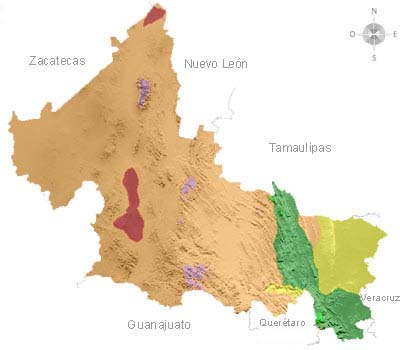
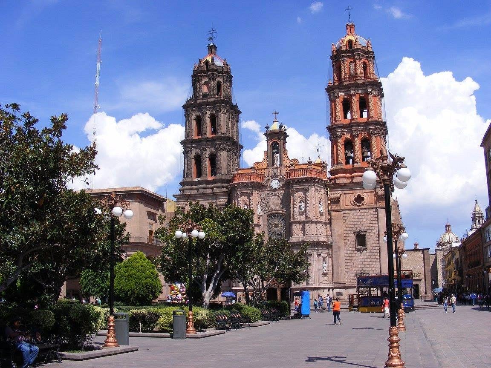
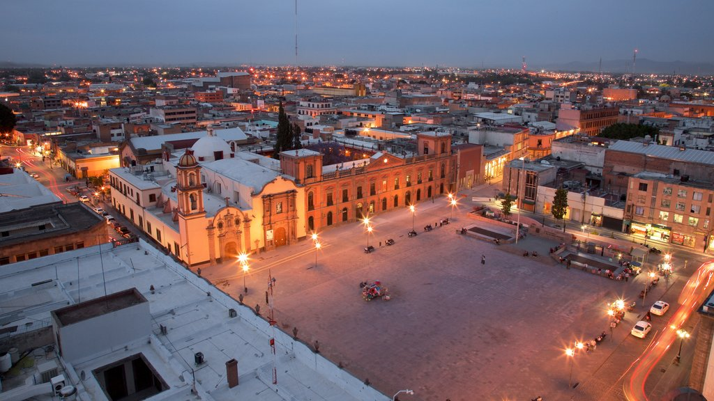

Programación Web I PRIM25
Evaluación práctica Parcial 1
Profesora: M.C. Imelda Deyanira Hernández Martínez
Alumna: Andrea Michelle Castillo Martínez
Visita San Luis Potosí



Urbano Villalón 500. Col. La Ladrillera